Executive Summary
Contents
Executive Summary¶
| English | Italiano| Français |
Beim Projekt «Identification, quantification and analysis of anthropogenic Swiss litter» (Identifizierung, Quantifizierung und Analyse von anthropogenem Abfall in der Schweiz, IQAASL) handelt es sich um ein vom Bundesamt für Umwelt (BAFU) in Auftrag gegebenes Projekt zur Erhebung von Daten zu sichtbaren Schadstoffen an Schweizer Seen und Fliessgewässern. Unter Verwendung von Abfallerhebungstechniken wurden sämtliche Abfallobjekte eingesammelt und identifiziert. Das Projekt wurde auf 20 Standorte in den Alpen und im Jura ausgedehnt. Insgesamt wurden 406 Proben an 163 Standorten in 95 Gemeinden entnommen.
In diesem Bericht werden die vom März 2020 bis August 2021 durchgeführten Abfallerhebungen sowie die in der Schweiz angewandten Methoden zusammengefasst und analysiert. Diese Erhebungsphase überschneidet sich mit dem Erhebungszeitraum des Swiss Litter Reports (SLR) [Bla18], dessen Erhebungen von April 2017 bis März 2018 durchgeführt worden sind. Der SLR war das erste nationale Projekt, bei dem das Standardprotokoll gemäss dem Leitfaden zur Überwachung von Strandabfällen [Han13] oder eine andere vergleichbare Methode angewandt wurde. Diese Überschneidung der Erhebungsphasen ermöglicht es, die Ergebnisse der vorliegenden Studie mit denen des SLR zu vergleichen.
{kind=link}
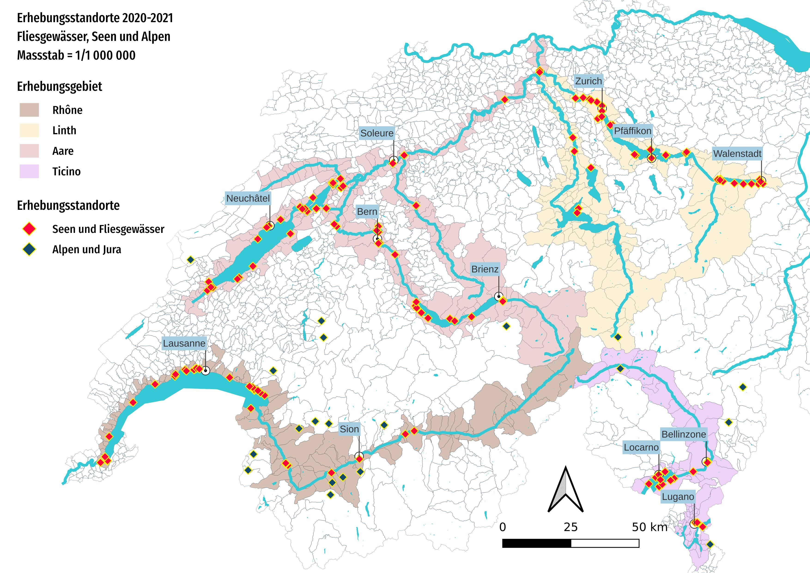
Abbildung 1: Karte der Erhebungsstandorte März 2020–August 2021. Die rot dargestellten Standorte betreffen Erhebungen an Fliessgewässern oder Seen, die violetten Punkte sind die Standorte in den Alpen und im Jura.
Seen und Flüsse¶
Die Proben an Seen und Fliessgewässern wurden vom März 2020 bis Mai 2021 entnommen. Im Rahmen von 386 Erhebungen wurden insgesamt 54’744 Gegenstände eingesammelt und klassifiziert. Die Erhebungsstandorte wurden für die regionale Analyse zu Erhebungsgebieten zusammengefasst und durch die Flüsse Aare, Rhone, Ticino und Linth/Limmat definiert. Die Erhebungen fanden an 143 verschiedenen Standorten in 77 Gemeinden statt. Insgesamt wurde eine lineare Strecke von 20 km mit einer Fläche von 9 Hektaren und einer Gesamtbevölkerung von 1,7 Millionen Personen untersucht.
Die meisten Erhebungen wurden an Seeufern durchgeführt (331 Proben), da Seen im Vergleich zu Fliessgewässern einen beständigeren und sichereren ganzjährigen Zugang bieten. Des Weiteren besitzen Seen grosse Flächen mit verringerter Fliessgeschwindigkeit, die von verschiedenen Flüssen, Bächen und Entwässerungssystemen gespeist werden. Damit sind sie ideale Standorte, um die Vielfalt der Gegenstände in und rund um die Gewässer zu beurteilen. Die insgesamt 316 Proben stammten aus sieben grossen Seen in drei grossen Einzugsgebieten. Zwanzig Standorte wurden für eine monatliche Probenahme während zwölf Monaten ausgewählt, mit Ausnahme des Lago Maggiore, der alle drei Monate beprobt wurde. Auch am Luganersee, am Vierwaldstättersee, am Brienzersee und am Zugersee wurden Erhebungen durchgeführt. Darüber hinaus fanden 55 Erhebungen an 16 Fliessgewässern statt.
Seestandorte mit monatlichen Probenahmen:
Erhebungsgebiet Aare
Thunersee: Spiez, Unterseen
Bielersee: Biel/Bienne, Vinelz
Neuenburgersee: Neuenburg, Cheyres-Châbles, Yverdon-les-Bains
Erhebungsgebiet Linth/Limmat
Zürichsee: Zürich, Küsnacht (ZH), Rapperswil-Jona, Richterswil
Walensee: Walenstadt, Weesen
Erhebungsgebiet Rhone
Genfersee: Vevey, Saint-Gingolph, Genf, Préverenges, La Tour-de-Peilz
Erhebungsgebiet Ticino
Lago Maggiore: Ascona, Gambarogno (dreimonatlich)
Medianwert der Erhebungen¶
Die Ergebnisse werden in der Einheit Abfallobjekte (pieces) pro 100 Meter (p/100 m) angegeben. Der Median der Erhebungsergebnisse aller Daten lag bei rund 189 p/100 m. Der höchste verzeichnete Wert betrug 6617 p/100 m (Erhebungsgebiet Rhone) und der tiefste Wert 2 p/100 m (Erhebungsgebiet Aare). Das Erhebungsgebiet Rhone wies von allen Erhebungen mit 442 p/100 m den höchsten Medianwert auf. Dies kann zum Teil durch die im Vergleich zu den anderen Erhebungsgebieten hohe Anzahl städtischer Erhebungsstandorte sowie durch die Ablagerung von fragmentierten Kunststoffen und Schaumstoffen am Ausfluss der Rhone im oberen Seebereich erklärt werden.
Weiter wurde ein Referenzwert berechnet, bei dem die Ergebnisse von Proben von Uferabschnitten mit einer Länge von weniger als 10 m und Gegenständen kleiner als 2,5 cm ausgeschlossen wurden. Diese in den Marine Beach Litter Baselines der EU [HG19] beschriebene Methode wurde verwendet, um die Referenz- und Schwellenwerte für alle europäischen Strände für die Jahre 2015 und 2016 zu berechnen. In Anwendung dieser Methode resultierte ein Medianwert von 131 p/100 m. Die Ergebnisse des europäischen Basiswerts liegen ausserhalb des Konfidenzintervalls (KI) von 95 % von 147–213 p/100 m, das anhand der IQAASL-Daten ermittelt wurde.
Die Erhebungen in der Schweiz waren im Durchschnitt kleinräumiger als in Meeresgebieten sowie an Standorten, die unter den meisten Umständen als städtisch eingestuft würden. Bisher werden See und Fliessgewässer flussaufwärts von Küstenregionen auf dem europäischen Kontinent noch nicht flächendeckend überwacht. Allerdings gibt es gemeinsame Bestrebungen einer Gruppe von Organisationen in der Schweiz und in Frankreich, um ein gemeinsames Überwachungs- und Datenaustauschprotokoll für das Rhonebecken einzuführen. Ausserdem setzt die Universität Wageningen für die Analyse von im Maas-Rhein-Delta erhobenen Daten seit Kurzem ähnliche Protokolle wie bei IQAASL ein [vEV21].
Die am häufigsten gefundenen Gegenstände¶
Als die am häufigsten gefundenen Gegenstände gelten Objekte, die in mindestens der Hälfte aller Erhebungen festgestellt wurden und/oder die zu den zehn mengenmässig am häufigsten vorkommenden Gegenständen gehören. Diese häufigsten Gegenstände stellen als Gruppe 68 Prozent aller im Probezeitraum identifizierten Objekte dar. Von den häufigsten Gegenständen fallen 27 Prozent in die Bereiche Lebensmittel, Getränke und Tabakwaren und 24 Prozent stehen im Zusammenhang mit Infrastruktur und Landwirtschaft.
Gegenstände im Zusammenhang mit Lebensmitteln, Getränken und Tabakwaren werden häufiger an Erhebungsstandorten gefunden, an denen ein grösserer Landanteil von Gebäuden oder festen Infrastrukturen beansprucht wird, ganz im Gegensatz zu Standorten mit einem grösseren Anteil an Wäldern oder landwirtschaftlichen Flächen. Infrastrukturmaterial und fragmentierte Kunststoffe werden allerdings in allen Erhebungsgebieten unabhängig von der Landnutzung rund um die Erhebungsstandorte ähnlich häufig gefunden.
{kind=link}
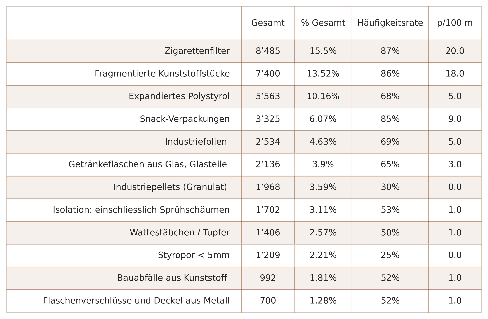
Abbildung 2: Gesamtergebnisse der Erhebung für alle Seen und Fliessgewässer: die am häufigsten gefundenen Gegenstände von März 2020 bis Mai 2021. Die Häufigkeitsrate (wird in diesem Bericht als “Ausfallrate” bezeichnet) entspricht dem Verhältnis der Anzahl Ereignisse, bei denen ein Gegenstand mindestens einmal gefunden wurde, zur Anzahl der total durchgeführten Erhebungen. Die Menge gibt an, wie häufig ein Objekt gefunden wurde, sowie der Medianwert der Abfallobjekte pro 100 Meter (p/100 m). So wurden beispielsweise in 87 Prozent der Erhebungen insgesamt 8’485 Zigarettenfilter gefunden, was 15 Prozent aller gesammelten Gegenstände entspricht und einen Medianwert von 20 Zigarettenfiltern pro 100 m Uferlinie ergibt.
Industriepellets und Schaumstoffe < 5 mm kamen beide in signifikanten Mengen vor, wurden jedoch in weniger als 50 Prozent der Erhebungen festgestellt (Median = 0). Dies deutet darauf hin, dass sie an spezifischen Standorten in hoher Dichte vorkommen. Zwar handelt es sich bei beiden Gegenständen um Mikroplastik, doch unterscheiden sich ihre Verwendung, ihre Herkunft und ihre Häufigkeit je nach Region des Erhebungsgebiets. Industriepellets sind Rohstoffe, die in Spritzgussverfahren verwendet werden, während Schaumstoffkügelchen entstehen, wenn Styropor zerkleinert wird. Weitere Angaben zu Standort, Mengen und Häufigkeit einzelner Gegenstände finden sich im Kapitel. Seen und Fliessgewässer.
{kind=link}
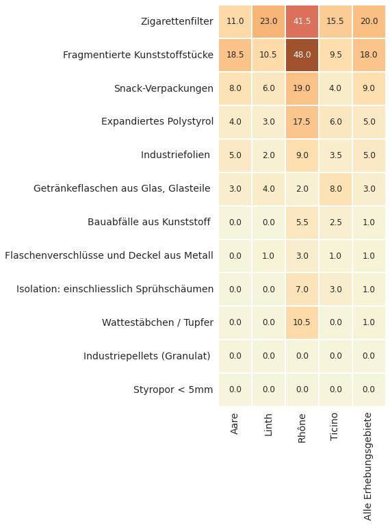
Abbildung 3: Alle Seen und Fliessgewässer nach Erhebungsgebiet: Der Medianwert der am häufigsten gefundenen Gegenstände; die Häufigkeiten variieren je nach Region des Erhebungsgebiets. So wiesen fragmentierte Kunststoffe in den Erhebungsgebieten Aare (18,5 p/100 m) und Rhone (48 p/100 m) die höchsten Medianwerte auf.
Trends 2017–2018¶
Ein Vergleich der IQAASL-Ergebnisse mit ähnlichen Daten für Seen und Fliessgewässer, die 2017/2018 (SLR) erhoben wurden, zeigen keine statistischen Unterschiede. Allerdings gab es Abweichungen bei der Häufigkeit der Gegenstände. So wurden in der Erhebungsperiode 2020–2021 im Allgemeinen weniger Zigaretten und Flaschendeckel gefunden. An vielen Standorten wurden jedoch keine Veränderungen beobachtet und die Menge an fragmentierten Kunst- und Schaumstoffen dürfte zugenommen haben ( Details siehe Vergleich der Datenerhebungen seit 2018 ).
{kind=link}
Abbildung 4: Vergleich der Erhebungsergebnisse von SLR (2018) und IQAASL (2021). Oben links: Gesamtergebnisse der Erhebung nach Datum. Oben rechts: Median der Gesamtergebnisse der monatlichen Erhebungen. Unten links: Anzahl Proben im Verhältnis zum Gesamtergebnis der Erhebung. Unten rechts: empirische kumulative Verteilung der Gesamtergebnisse der Erhebung.
Die Alpen und der Jura¶
Von den 20 Erhebungen im Erhebungsgebiet Alpen wiesen 17 eine Länge und eine Breite von über 10 m auf. Der Medianwert der Erhebungen betrug 110 p/100 m und lag damit unter dem Medianwert der anderen Erhebungsgebiete (189 p/100 m). Gegenstände aus dem Konsumbereich wie Lebensmittel und Getränke oder Tabakwaren machten einen geringeren Anteil an der Gesamtzahl aus und wiesen eine tiefere p/100 m-Rate auf im Vergleich zu den Ergebnissen von Standorten an Uferlinien. Dieser Unterschied könnte teilweise auf den geringen Verstädterungsgrad des Erhebungsgebiets Alpen im Vergleich zu allen anderen Erhebungsgebieten zurückzuführen sein sowie darauf, dass Material sich tendenziell flussabwärts bewegt. Für die Ergebungsmethodik und die Ergebnisse der Erhebung in den Alpen siehe Die Alpen und der Jura.
Kommunikation der Ergebnisse¶
Für die Kommunikation von Verschmutzungsmengen ist es naheliegend, die Ergebnisse in eine einfache Einheit mit der durchschnittlichen Anzahl pro 100 m umzuwandeln, da der Durchschnitt meist höher ist und nur selten null beträgt. Allerdings kann der Durchschnitt bei Extremwerten doppelt so hoch ausfallen wie der Median, was Verwirrung in Bezug auf den Unterschied zwischen den beobachteten und den gemeldeten Ergebnissen stiften kann. Deshalb ist es informativer und reproduzierbarer, die Bandbreite wahrscheinlicher Werte oder die Wahrscheinlichkeit, einen Gegenstand zu finden, anzugeben, wenn ähnliche Protokolle befolgt werden. So etwa bei der Interpretation der Mengen an Industriepellets, die am Genfersee gefunden wurden:
1’387 Produktionspellets aus Kunststoff wurden festgestellt, was 5 Prozent aller am Genfersee identifizierten Gegenstände entspricht. Die Anzahl Pellets pro 100 m schwankt je nach Region zwischen 0 und 1’033. Beim See besteht im Allgemeinen eine Wahrscheinlichkeit von 40 Prozent, in einer Erhebung irgendwo mindestens auf ein Pellet zu stossen. An einigen Standorten, wie Genf (Wahrscheinlichkeit von 60 %) oder Préverenges (Wahrscheinlichkeit von 80 %), werden Produktionspellets regelmässig an den Ufern gefunden. Werte zwischen 3 p/100 m und 56 p/100 m sind üblich.
Schlussfolgerungen¶
Auf nationaler Ebene waren die Erhebungsergebnisse des IQAASL-Projekts im Vergleich zu den Erhebungen, die 2017 im Rahmen der SLR-Studie durchgeführt wurden, stabil. Allerdings war ein allgemeiner Rückgang der Menge an Gegenständen im Zusammenhang mit Lebensmitteln, Getränken und Tabakwaren feststellbar. Die Anzahl der identifizierten Infrastrukturobjekte sowie fragmentierten Kunststoffe und Schaumstoffe ging hingegen nicht zurück, an einigen Standorten könnten gar starke Zunahmen verzeichnet worden sein. Die pandemiebedingten Einschränkungen, die grosse Menschenansammlungen im Freien begrenzten, könnten sich positiv ausgewirkt und zu einem Rückgang von Objekten aus den Bereichen Lebensmittel, Getränke und Tabakwaren geführt haben. Die grössten Zunahmen bei infrastrukturbezogenen Gegenständen waren im Wallis, in der Waadt und in Brienz zu beobachten, also an Standorten in der Nähe von Flusseinträgen von Rhone und Aare.
Die Landnutzung rund um einen Erhebungsstandort hat einen messbaren Effekt auf das Vorkommen bestimmter Gegenstände: Je höher die Anzahl Gebäude und fester Infrastrukturen ist, desto mehr Tabakwaren und Lebensmittelprodukte werden gefunden. Diese Korrelation gilt nicht für Gegenstände wie fragmentierte Kunststoffe und Industriefolien – sie werden unabhängig von der Landnutzung zu fast gleichen Teilen festgestellt, wobei sie bei Eintragsstellen von Flüssen und Kanälen häufiger anzutreffen sind.
Derzeit werden drei der vier IQAASL-Erhebungsgebiete von Forschungs- und Regierungsstellen flussabwärts der Schweiz aktiv überwacht. Diese verwenden ähnliche Methoden wie die in diesem Bericht vorgestellten. Zudem streben regionale Organisationen in der Schweiz mit Partnerorganisationen in der EU eine Standardisierung von Berichterstattung und Protokollen an.
IQAASL ist ein Bürgerwissenschaftsprojekt, das ausschliesslich Open-Source-Tools nutzt und Daten mit einer GNU Public License teilt. So ist eine Zusammenarbeit mit Stakeholdern möglich. Am Ende des Mandats per 31. Dezember 2021 übernimmt Hammerdirt die Verantwortung für die Pflege des Code- und Daten-Repositorys, das öffentlich auf Github gehostet wird.
Die Organisationen, die sich an IQAASL beteiligt haben, suchen aktiv nach Möglichkeiten, den Datenerhebungsprozess und/oder die Ergebnisse in ihr eigenes Geschäftsmodell zu integrieren. Allerdings gibt es in vielen regionalen Organisationen zu wenige Datenwissenschaftlerinnen und Datenwissenschaftler, was den Integrationsprozess verlängern und die Innovationsrate auf der Ebene, auf der sie am nötigsten wäre, drosseln könnte.
Empfehlungen¶
Überwachung und Berichterstattung¶
Effizienzgewinne bei Datenaustausch und Berichterstattung könnten durch die Festlegung eines Standardberichtsformats umgehend erzielt werden. Dies würde es für regionale Verwaltungen einfacher machen, andere Stakeholder über die Prioritäten zu informieren, was wiederum Überwachungsstrategien erleichtern und die Definition von Reduktionszielen unterstützen würde. Hierzu könnten folgende Massnahmen umgesetzt werden:
Ein Netz von Organisationen aufbauen, die für die Erhebung und die Berichterstattung über die Ergebnisse zuständig sind.
Ein Standardberichtsformat schaffen, um die Kommunikation zwischen Verwaltungen auf Ebene Gemeinde, Kanton und Region/Bezirk zu erleichtern und die Koordination regionaler und lokaler Reduktionsstrategien zu verbessern.
Die nächste Probenahmeperiode oder das nächste Probenahmeintervall festlegen.
Akademische Kreise formell in Planung, Probenahme und Analyse einbeziehen. Dieses Projekt wurde durch die Zusammenarbeit von Professorinnen und Professoren von ETH, UNIGE, EPFL, PSI und FHNW geprägt. Universitäre Partner wären ideal, um die Analysemethoden weiterzuentwickeln. Das Citizen Science Center (ETH) und das Citizen Cyberlab (UNIGE) verfügen über die Erfahrung und die Infrastruktur, um bürgerwissenschaftliche Überwachungsprojekte mit Forschungstätigkeiten zu verknüpfen. Auf diese Weise kann ein äusserst anpassungsfähiger und effizienter Überwachungsplan erarbeitet werden.
Beseitigung und Reduktion¶
Bei Strategien zur Beseitigung oder Reduktion von Abfällen im Wasser sollte zunächst deren Quelle berücksichtigt werden.
Gegenstände im Zusammenhang mit Landnutzungsmerkmalen
Die Ergebnisse weisen auf einen positiven Zusammenhang zwischen der Anzahl Gebäude und der Menge an Gegenständen aus den Bereichen Lebensmittel, Getränke und Tabakwaren hin. Dies legt nahe, dass Strategien zur Verringerung dieser Gegenstände in Gebieten ansetzen sollten, die eine hohe Konzentration an Infrastrukturen in Ufernähe aufweisen. Die Ergebnisse aus dem Erhebungsgebiet Rhone lassen vermuten, dass sich lokale Sensibilisierungskampagnen positiv auswirken könnten ( siehe Abbildung 1.9 Seen und Fliessgewässer ). Auch wenn alle Gegenstände im Zusammenhang mit Lebensmitteln, Getränken und Tabakwaren, auf die Sensibilisierungskampagnen für Abfall in der Regel abzielen, beseitigt würden, würde dies die Gesamtmengen zwar signifikant reduzieren, doch würden immer noch 64 Prozent des Materials liegen bleiben.
Weitere gängige Reduktionsstrategien sind u. a. die folgenden:
Angemessene Bereitstellung von wetter- und tierbeständigen Abfallbehältern
Enger getakteter Zeitplan für Abfallentsorgung und Reinigung
Reduktion von Einwegprodukten aus Kunststoff
Viele Länder haben bereits begonnen, Einschränkungen für bestimmte Gegenstände einzuführen. So dürfen beispielsweise Einwegteller und -besteck aus Plastik, Strohhalme, Ballonstäbe und Wattestäbchen aus Kunststoff seit dem 3. Juli 2021 in den EU-Mitgliedstaaten nicht mehr verkauft werden. In Frankreich werden in Regenwasserkanalisationen erfolgreich Rückhaltenetze eingesetzt, damit Abfälle nicht mehr in Seen und Fliessgewässer gelangen, was jedoch Investitionen in Infrastruktur, Ausrüstung und Arbeitskräfte bedingt.
Nicht mit der Landnutzung verbundene Gegenstände
Zur Verringerung der Anzahl Gegenstände, die keine Korrelation mit der Landnutzung aufweisen, ist zumindest auf Ebene des Sees oder des Fliessgewässers sowie bei allen Standorten, die oberhalb der geplanten Erhebungsorte liegen, ein koordiniertes Vorgehen notwendig. Zu den häufigsten Gegenständen zählen die folgenden:
Fragmentierte Kunststoffe
Fragmentierte Schaumstoffe
Baukunststoffe
Industriepellets
Wattestäbchen
Industriefolien
Diese Gegenstände machen 40 Prozent des gesamten identifizierten Materials aus. Viele Gegenstände werden in der Industrie oder für die Körperpflege verwendet und haben normalerweise nichts mit Tätigkeiten am Ufer zu tun. Eine Ausweitung der Sensibilisierungskampagnen, die auf eine Vermeidung von Materialverlusten an der Quelle aus bestimmten Sektoren abzielen, könnte dafür sorgen, dass weniger Gegenstände wie Industriepellets, die für Spritzgussverfahren verwendet werden, gefunden werden. Einige Gegenstände wie Wattestäbchen aus Kunststoff und andere Gegenstände aus Plastik, die über Toilettenspülungen entsorgt werden, gelangen über Abwasserreinigungsanlagen in Seen und Fliessgewässer
Reduktionsstrategien könnten Folgendes umfassen:
Aufrüstung von Abwasserreinigungsanlagen zur Verringerung von Materialverlusten
Sensibilisierungskampagnen für spezifische Gegenstände oder Produkte
Sensibilisierungskampagnen für spezifische Branchen
Beseitigungs- oder Reduktionsstrategien erfordern regionale Massnahmen, um auch die Gemeinden oberhalb der Erhebungsstandorte miteinzubeziehen. Wahrscheinlich würde eine weniger starke Abhängigkeit von Einwegkunststoffen, Schaumstoffen, Baukunststoffen und Industriefolien dazu führen, dass kleinere Mengen dieser Materialien in die Umwelt gelangen. Da diese Materialien günstige Wegwerfwaren sind, wurden sie in allen Sektoren immer häufiger eingesetzt, wodurch eine immer grössere Abhängigkeit entstand. Das geringe Gewicht und ihre Abbaueigenschaften erleichtern die Fragmentierung dieser Materialien sowie ein Entweichen in die Umwelt, insbesondere, wenn sie länger im Freien verbleiben. Kunststoffschadstoffe sind ein weltweites Problem und immer mehr Länder ergreifen Massnahmen, um weniger von Einwegkunststoffen und -schaumstoffen wie Styropor abhängig zu sein.
Sommario esecutivo¶
| Deutsch | Français | English |
QAASL (Identificazione, quantificazione e analisi dei rifiuti antropogenici in Svizzera) è un progetto commissionato dall’Ufficio federale dell’ambiente (UFAM) per raccogliere dati sugli inquinanti visibili lungo le rive di laghi e fiumi svizzeri. Tutti i materiali scaricati nell’ambiente sono stati raccolti e identificati con l’ausilio di tecniche d’indagine sui rifiuti. Il progetto è stato ampliato al fine di includere 20 ubicazioni nelle Alpi e nel Giura, per un totale di 406 campioni prelevati da 163 ubicazioni in 95 comuni.
Il presente rapporto costituisce una sintesi e un’analisi sia delle indagini condotte sui rifiuti, sia dei metodi utilizzati in Svizzera da marzo 2020 fino a fine agosto 2021. Questo arco temporale si sovrappone al periodo di rilevamento dell’indagine Swiss Litter Report (SLR)[Bla18], condotta da aprile 2017 a marzo 2018. Lo Swiss Litter Report è stato il primo progetto a livello nazionale a utilizzare il protocollo standard descritto nella Guida al monitoraggio del littering delle spiagge [Han13], o qualsiasi altro metodo comparabile. Poiché il periodo di indagine del presente studio si sovrappone a quello dello SLR è possibile fare una comparazione tra i risultati.
{kind=link}
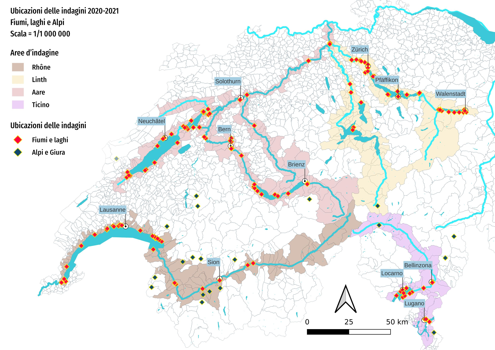
Figura 1: Mappa delle ubicazioni oggetto d’indagine da marzo 2020 ad agosto 2021. Le ubicazioni contrassegnate in rosso indicano le indagini su fiumi o laghi e i punti in viola designano le ubicazioni sulle Alpi e nel Giura.
Laghi e fiumi¶
Laghi e fiumi sono stati campionati da marzo 2020 a maggio 2021, per un totale di 54 744 oggetti prelevati e classificati nel corso di 386 indagini. Le ubicazioni sono state divise in aree di indagine per l’analisi regionale e definite in funzione dei bacini dei fiumi Aare, Rodano, Ticino e Linth/Limmat. Le indagini sono state condotte presso 143 diverse ubicazioni distribuite su 77 comuni. È stata presa in esame una distanza lineare totale di 20 km comprendente una superficie di 9 ettari e una popolazione totale di 1,7 milioni di abitanti.
La maggior parte delle indagini si è svolta lungo le rive dei laghi (331 campioni), in quanto questi specchi d’acqua offrono tutto l’anno un accesso più costante e sicuro rispetto ai fiumi. Inoltre i laghi sono grandi aree con scorrimento ridotto che hanno come immissari fiumi, ruscelli e sistemi di drenaggio. Sulla scorta di queste caratteristiche, si configurano come ubicazioni ideali per valutare la varietà degli oggetti nei corpi idrici e sulle loro sponde. In totale, 316 campioni sono stati raccolti in sette laghi di grandi dimensioni distribuiti lungo tre bacini fluviali principali. Venti località sono state selezionate per un campionamento con cadenza mensile sull’arco di dodici mesi, con l’eccezione del Lago Maggiore che è stato campionato ogni tre mesi. Sono state condotte indagini anche sul lago di Lugano, sul lago dei Quattro Cantoni, sul lago di Brienz e sul lago di Zugo. Sono state inoltre effettuate 55 indagini su 16 fiumi.
In totale 316 campioni provenivano da sette laghi principali in 3 maggiori bacini fluviali. Venti località sono state selezionate per essere campionate mensilmente per un periodo di dodici mesi ad eccezione del Lago Maggiore, che è stato campionato ogni tre mesi. Sono state condotte indagini anche sul Lago di Lugano, Lago dei Quattro Cantoni, Lago di Brienz e Lago di Zugo. Inoltre, ci sono state 55 indagini su 16 fiumi.
Ubicazioni lacustri con campionamento mensile:
Area d’indagine dell’Aare
Lago di Thun: Spiez, Unterseen
Lago di Biel/Bienne: Biel/Bienne, Vinelz
Lago di Neuchâtel: Neuchâtel, Cheyres-Châbles, Yverdon-les-Bains
Area d’indagine della Linth/Limmat
Lago di Zurigo: Zurigo, Küsnacht (ZH), Rapperswil-Jona, Richterswil
Walensee: Walenstadt, Weesen
Area d’indagine del Rodano
Lago Lemano: Vevey, Saint-Gingolph, Ginevra, Préverenges, La Tour-de-Peilz
Area d’indagine del Ticino
Lago Maggiore: Ascona, Gambarogno (frequenza trimestrale)
Totale mediano dell’indagine¶
I risultati sono espressi in unità di pezzi di rifiuti per 100 metri lineari (p/100 m). Il risultato mediano dell’indagine per tutti i dati è stato di circa 189 p/100 m. Il valore massimo registrato è stato di 6617 p/100 m (area d’indagine del Rodano), mentre il minimo è stato di 2 p/100 m (area d’indagine dell’Aare). L’area d’indagine del Rodano ha evidenziato il totale d’indagine mediano più alto, pari a 442 p/100 m. Questa incidenza può essere spiegata in parte sia dall’elevato numero di campioni d’indagine in contesti urbani rispetto alle altre aree d’indagine, sia dal deposito di plastiche frammentate e plastiche espanse nella zona di immissione del Rodano nella regione superiore del Lago Lemano.
Un valore di riferimento è stato calcolato escludendo i risultati dei campioni provenienti da sezioni di rive inferiori a 10 m e da oggetti di diametro inferiore a 2,5 cm. Questo metodo, descritto nella pubblicazione EU Marine Beach Litter Baselines [HG19] è stato utilizzato per calcolare i valori di riferimento e di soglia per tutte le spiagge europee nel 2015 e nel 2016, con un valore mediano di 131 p/100 m. I risultati del valore di baseline europeo si collocano al di fuori dell’intervallo di confidenza (CI) del 95 per cento, pari a 147-213 p/100 m, definito utilizzando i dati IQAASL.
Le indagini in Svizzera hanno evidenziato in media una portata più ridotta rispetto agli ambienti marini e sono state condotte in ubicazioni che nella maggior parte delle circostanze sarebbero considerate urbane. Finora, nel continente europeo il monitoraggio generalizzato di laghi e fiumi a monte delle regioni costiere non è stato una pratica generalizzata. È tuttavia in atto un’iniziativa coordinata, condotta da un gruppo di associazioni in Svizzera e in Francia, per definire un protocollo comune di monitoraggio e scambio di dati per il bacino del Rodano. L’Università e istituto di ricerca di Wageningen, Paesi Bassi, ha altresì iniziato ad analizzare i dati raccolti nel delta della Mosa e del Reno utilizzando protocolli analoghi a quelli IQAASL [vEV21].
Gli oggetti più comuni¶
Gli oggetti più comuni sono definiti come quegli elementi censiti in almeno il 50 per cento di tutte le indagini e/o che si collocano tra i dieci più frequenti per quantità. Come gruppo, gli oggetti più comuni rappresentano il 68 per cento di tutti gli elementi censiti nel periodo di campionamento. Nel novero degli elementi più comuni, il 27 per cento è correlato al consumo di prodotti alimentari, bevande e tabacco, mentre il 24 per cento proviene da infrastrutture e agricoltura.
Gli oggetti correlati al consumo di prodotti alimentari, bevande e tabacco vengono censiti con percentuali più elevate nelle zone d’indagine con una quota maggiore di edifici o infrastrutture fisse. Una tendenza inversa si riscontra nelle ubicazioni con una percentuale maggiore di terreni ricoperti da boschi o dedicati ad attività agricole. Materiali per infrastrutture e plastiche frammentate sono invece reperiti con una frequenza analoga in tutte le aree d’indagine, indipendentemente dalla destinazione d’uso dei terreni circostanti.
{kind=link}
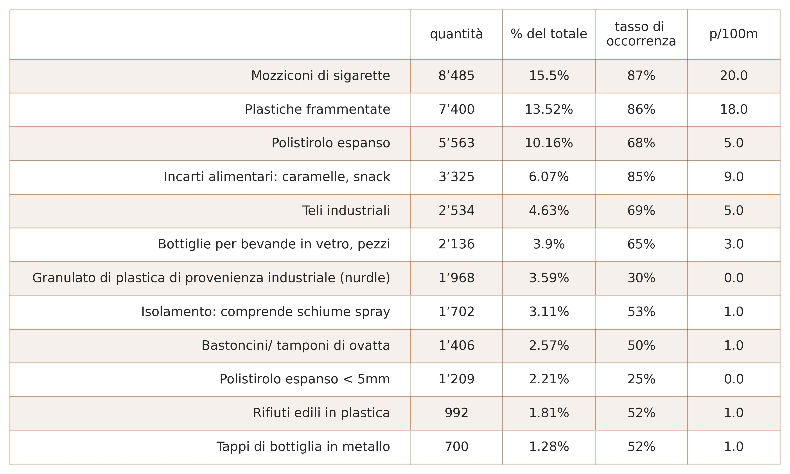
Figura 2: Totale delle indagini per tutti i laghi e i fiumi: gli oggetti più comuni censiti da marzo 2020 a maggio 2021. Il tasso di occorrenza (indicato come “tasso di insuccesso” in questo rapporto) è il rapporto tra il numero di volte in cui un oggetto è stato censito con almeno un’occorrenza rispetto al numero totale di indagini. La quantità è il numero totale di elementi raccolti per un oggetto censito e la mediana dei pezzi di rifiuti per 100 metri lineari (p/100 m). Per esempio, un totale di 8485 mozziconi di sigarette è stato censito nell’87 per cento delle indagini, pari al 15 per cento degli elementi totali raccolti e con un valore mediano di 20 mozziconi per 100 metri lineari di linea rivierasca.
Granulati di plastica di provenienza industriale e schiume espanse < 5 mm hanno evidenziato entrambi occorrenze in quantità significative, ma sono stati censiti in meno del 50 per cento delle indagini (mediana di 0), indicando conteggi elevati in ubicazioni specifiche. Pur trattandosi in entrambi i casi di microplastiche, le loro peculiarità in termini di impiego, origine e tasso di occorrenza sono diverse a seconda della regione dell’area d’indagine. I granulati di plastica di provenienza industriale sono materie prime usate nei processi di stampaggio a iniezione e le palline di plastica espansa derivano dalla frammentazione del polistirolo espanso. Per maggiori informazioni su ubicazione, quantità e tasso di occorrenza dei singoli oggetti, si veda la sezione Laghi e fiumi - english
{kind=link}
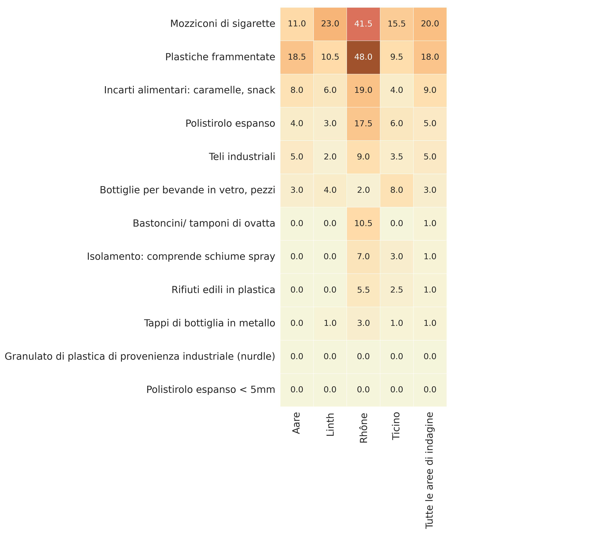
Figura 3: Tutti i laghi e i fiumi per area di indagine: totale mediano dell’indagine degli oggetti più comuni censiti; le percentuali variano a seconda della regione dell’area d’indagine. Per esempio, le plastiche frammentate hanno evidenziato il valore mediano maggiore nelle aree d’indagine di Aare (18,5 p/100 m) e Rodano (48 p/100 m).
Tendenze in atto dal 2017-2018¶
Dati analoghi relativi a un’indagine su laghi e fiumi raccolti nel periodo 2017-2018 (SLR) non hanno evidenziato differenze statistiche nel raffronto con i risultati IQAASL. Sono state tuttavia registrate variazioni a livello di quantità degli oggetti. In generale, nel periodo di indagine 2020-2021 è stato censito un numero inferiore di mozziconi di sigarette e tappi di bottiglia, ma per molte ubicazioni non si è registrata alcuna variazione e si è avuto probabilmente un aumento delle plastiche e delle schiume espanse frammentate. Per i dettagli in merito, si veda Aumento e diminuzione dei rifiuti dal 2017.
{kind=link}
Figura 4: Raffronto dei risultati d’indagine tra SRL (2018) e IQAASL (2021). In alto a sinistra: totali delle indagini per data. In alto a destra: totale mediano dell’indagine mensile. In basso a sinistra: numero di campioni rispetto al totale dell’indagine. In basso a sinistra: distribuzione cumulativa empirica dei totali delle indagini.
Alpi e Giura¶
Sulle venti indagini condotte nell’area delle Alpi, 17 hanno soddisfatto i criteri di lunghezza e larghezza superiori a 10 m. Il valore mediano delle indagini è stato di 110 p/100m, inferiore al valore mediano di tutte le altre aree d’indagine (189 p/100 m). Gli oggetti correlati ai consumi personali, per esempio di prodotti alimentari e bevande o tabacco, hanno evidenziato una percentuale più bassa rispetto al totale, con un tasso di p/100 m inferiore rispetto ai risultati delle ubicazioni rivierasche. Questa differenza potrebbe essere in parte dovuta sia ai bassi livelli di urbanizzazione che caratterizzano l’area d’indagine delle Alpi rispetto a tutte le altre aree d’indagine, sia alla tendenza del materiale a fluire a valle. Per quanto concerne la metodologia di indagine adottata per le Alpi e i relativi risultati, si veda la sezione Alpi e Giura.
Comunicazione dei risultati¶
Per comunicare le quantità di agenti inquinanti è utile convertire i risultati in una semplice parametrazione di pezzi medi per 100 m lineari, in quanto la media è generalmente più elevata e raramente risulta pari a 0. Quando si considerano valori estremi, tuttavia, la media può risultare anche doppia rispetto alla mediana creando confusione circa la differenza tra i risultati osservati e quelli riportati. Quando si adottano protocolli di questo tipo, comunicare la gamma di valori possibili o la probabilità di reperire un oggetto costituisce un fattore più informativo e ripetibile. Per esempio, in relazione all’interpretazione delle quantità di granulati di plastica di provenienza industriale censiti sul Lago Lemano.
Sono stati reperiti 1387 granulati in plastica (GPI), pari al 5 per cento di tutti gli oggetti censiti sul Lago Lemano. Il numero di unità di granulati per 100 m lineari varia da 0 a 1033 a seconda della regione. Per il lago, in generale, sussiste ovunque una probabilità pari a circa il 40 per cento di trovare almeno un granulato durante un rilevamento. In alcune località come Ginevra (probabilità del 60%) o Préverenges (probabilità dell’80%), i granulati di plastica industriale costituiscono elementi costanti sulle sponde del lago e quantità tra 3 p/100 m e 56 p/100 m sono del tutto comuni.
Conclusioni¶
Su scala nazionale, i risultati dell’indagine IQAASL riflettono una certa stabilità rispetto ai dati rilevati nel 2017 dallo studio SLR. Tuttavia, è stata registrata una diminuzione generalizzata della quantità di oggetti correlati al consumo di prodotti alimentari, bevande e tabacco. Gli oggetti legati alle infrastrutture e alle plastiche e schiume espanse frammentate non sono diminuiti e alcune ubicazioni hanno eventualmente registrato forti incrementi. Le misure di contenimento della pandemia, che limitano i grandi assembramenti all’aperto, hanno probabilmente prodotto un effetto favorevole sulla riduzione degli oggetti legati al consumo di prodotti alimentari, bevande e tabacco. I maggiori aumenti per quanto concerne gli oggetti legati alle infrastrutture sono stati registrati nei Cantoni Vallese e Vaud, nonché a Brienz: tutte ubicazioni in prossimità dei punti di immissione dei fiumi Rodano e Aare.
La destinazione d’uso del terreno prospiciente a un luogo d’indagine produce un effetto misurabile sul deposito di determinati oggetti. Il numero di edifici e infrastrutture presenti è direttamente proporzionale al reperimento di rifiuti correlati al consumo di prodotti alimentari e tabacco. Oggetti come plastiche frammentate e teli industriali non presentano invece lo stesso grado di correlazione e sono censiti con un’occorrenza percentuale approssimativamente analoga a prescindere dalla destinazione d’uso del terreno, con picchi di frequenza in prossimità dei punti di immissione di fiumi/canali.
Attualmente tre delle quattro aree di indagine nell’IQAASL sono monitorate in modo attivo da agenzie governative e di ricerca a valle della Svizzera, con l’utilizzo di metodologie analoghe a quelle illustrate nel presente rapporto. Le associazioni regionali in Svizzera stanno inoltre promuovendo attivamente una rendicontazione e dei protocolli standard con organizzazioni partner nell’UE.
QAASL è un progetto di «citizen science» che si avvale esclusivamente di strumenti open-source e condivide i dati su licenza pubblica GNU, permettendo la collaborazione con le parti coinvolte. Alla fine del mandato, fissata in data 31 dicembre 2021, Hammerdirt si assumerà la responsabilità per la gestione del codice e dell’archivio di dati ospitato pubblicamente su Github.
Le associazioni che hanno partecipato al progetto IQAASL sono alla ricerca attiva di modalità per integrare il processo di raccolta dei dati e/o i risultati nel rispettivo modello di business. All’interno di molte associazioni regionali sussiste tuttavia una carenza di data scientist e ciò potrebbe tradursi in un allungamento del processo di integrazione e in un’inibizione del tasso di innovazione proprio negli ambiti in cui questo aspetto risulta più necessario.
Raccomandazioni¶
Monitoraggio e rendicontazione¶
L’aumento dell’efficienza a livello di scambio di dati e di reportistica potrebbe essere ottenuto con effetto immediato definendo un formato di rendicontazione standard. In questo modo, per le amministrazioni regionali sarebbe più agevole comunicare le priorità alle altre parti coinvolte, agevolando le strategie di monitoraggio e contribuendo a definire gli obiettivi di riduzione. In quest’ottica, si potrebbero adottare le seguenti misure:
Sviluppo di una rete di associazioni responsabili per la raccolta e la rendicontazione dei risultati.
Creazione di un formato di rendicontazione standard per agevolare la comunicazione tra amministrazioni a livello comunale, cantonale e regionale/distrettuale, con contestuale miglioramento del coordinamento delle strategie di riduzione a livello regionale e locale.
Definizione del successivo periodo di campionamento e dei relativi intervalli.
Coinvolgimento formale del mondo accademico nelle attività di pianificazione, campionamento e analisi. Questo progetto è stato creato con la collaborazione di professori delle seguenti università: Politecnico federale di Zurigo (ETH), Università di Ginevra (UNIGE), Scuola politecnica federale di Losanna (EPFL), Istituto Paul Scherrer (PSI) e Scuola universitaria professionale della Svizzera nordoccidentale (FHNW). La collaborazione di partner universitari è auspicabile per la prosecuzione dello sviluppo di metodologie analitiche. Il Citizen Science Center (ETH) e il Citizen Cyberlab (UNIGE) dispongono dell’esperienza e delle infrastrutture per collegare i progetti di monitoraggio di «citizen science» con le attività di ricerca, dando così vita a un piano di monitoraggio molto flessibile ed efficiente.
Eliminazione e riduzione¶
Le strategie per l’eliminazione o la riduzione dei rifiuti lungo le rive di specchi e corsi d’acqua dovrebbero innanzitutto considerare le fonti di provenienza degli agenti inquinanti.
Oggetti associati a fattori di uso del suolo
I risultati indicano una correlazione positiva tra il numero di edifici presenti e la quantità di rifiuti correlati al consumo di prodotti alimentari, bevande e tabacco. Si evince che le strategie di riduzione per questi oggetti dovrebbero iniziare nelle aree che presentano alte concentrazioni di infrastrutture in prossimità della linea rivierasca. I risultati dell’area di indagine del Rodano indicano che la conduzione di campagne di sensibilizzazione a livello locale potrebbe produrre effetti positivi. Si veda a riguardo la Figura 1.9 Laghi e fiumi - english . Anche se l’eliminazione di tutti gli oggetti correlati al consumo di generi alimentari, bevande e tabacco, sui quali di norma si concentrano le campagne di sensibilizzazione sui rifiuti, contribuirebbe in maniera significativa alla riduzione delle quantità totali, rimarrebbe comunque il 64 per cento del materiale complessivo.
Altre strategie comunemente diffuse di riduzione delle immissioni di rifiuti comprendono:
una predisposizione adeguata di contenitori per l’immondizia resistenti alle intemperie e agli animali;
dei miglioramenti nei programmi di ritiro dei rifiuti e di pulizia delle strade;
la riduzione dei contenitori di plastica monouso.
Molti Paesi hanno già messo in atto procedure di restrizione di elementi mirati. Per esempio, a partire dal 3 luglio 2021 non è più consentito immettere sui mercati degli Stati membri dell’UE articoli di plastica monouso quali piatti, posate, bastoncini per palloncini e bastoncini di ovatta. Reti di contenimento per intercettare i rifiuti nei sistemi di drenaggio dell’acqua piovana prima dell’immissione in laghi e fiumi sono state impiegate con successo in Francia, ma richiedono investimenti in infrastrutture, attrezzature e manodopera.
Oggetti non associati all’uso del suolo
Gli oggetti che non presentano una correlazione positiva con l’uso del suolo richiedono un intervento coordinato almeno a livello di lago o di fiume, nonché per tutte le località a monte delle ubicazioni di rilevamento previste. Il novero degli oggetti più comunemente diffusi comprende:
plastiche frammentate;
schiume espanse frammentate;
plastiche da costruzione;
granulati di plastica di provenienza industriale;
bastoncini di ovatta;
teli industriali.
Questi oggetti costituiscono il 40 per cento di tutto il materiale censito. Molti hanno applicazioni industriali e di igiene personale, tipicamente non associate ad attività rivierasche. L’intensificazione delle campagne di sensibilizzazione mirate alla prevenzione di perdite di materiale da settori specifici può ridurre l’occorrenza di oggetti come i granulati industriali usati per lo stampaggio a iniezione di articoli in plastica. Alcuni oggetti come i bastoncini di ovatta e altre plastiche scaricate dal water vengono immessi nei laghi e nei fiumi attraverso gli impianti di trattamento delle acque.
Le strategie di riduzione possono comprendere:
il miglioramento degli impianti di trattamento delle acque reflue per ridurre gli sversamenti di materiale;
l’attuazione di campagne di sensibilizzazione per oggetti o prodotti specifici;
l’attuazione di campagne di sensibilizzazione per settori produttivi specifici.
Le strategie di eliminazione o di riduzione richiedono interventi coordinati a livello regionale, al fine di coinvolgere le comunità a monte delle ubicazioni di indagine.
Una minore dipendenza da plastiche monouso, plastiche espanse, plastiche da costruzione come pure da fogli e pellicole industriali ridurrebbe probabilmente in ampia misura i volumi di questi inquinanti che finiscono nell’ambiente. Il basso costo e la natura «usa e getta» di questi materiali si sono tradotti in un’abbondanza e una dipendenza sempre maggiori in tutti i settori. Le caratteristiche di leggerezza e degradabilità di questi materiali agevolano la frammentazione e la dispersione nei sistemi naturali, soprattutto in caso di esposizione esterna prolungata. Gli inquinanti plastici costituiscono un problema globale e un numero sempre maggiore di Paesi sta portando avanti un processo di riduzione della dipendenza dalle plastiche monouso e dalle plastiche espanse come il polistirolo.
Résumé¶
| English | Italiano | Deutsch |
L’IQAASL (Identification, quantification and analysis of anthropogenic Swiss litter) est un projet mandaté par l’Office fédéral de l’environnement (OFEV) dans le but de recueillir des données sur les déchets visibles sur les rivages des lacs et des cours d’eau suisses. Tous les déchets collectés ont été identifiés à l’aide de techniques d’inventaire spécifiques. Le projet a été élargi pour inclure 20 sites supplémentaires situés dans les Alpes et le Jura. Au total, 406 inventaires ont été réalisés sur 163 sites dans 95 communes.
Ce rapport résume et analyse les inventaires effectués en Suisse de mars 2020 à août 2021 et explicite les méthodes de travail utilisées. Cette phase d’échantillonnage se chevauche avec la période d’enquête du Swiss Litter Report (SLR) [Bla18], qui s’est déroulée d’avril 2017 à mars 2018. Le SLR est le premier projet d’envergure nationale dans le cadre duquel le protocole standard décrit dans le Guide sur la surveillance des déchets marins dans les mers européennes [Han13], ou toute autre méthode comparable, a été utilisé. Ce chevauchement permet la comparaison des résultats de la présente étude avec celle du SLR.
{kind=link}
Figure 1: Cartes des zones de relevé étudiées entre mars 2020 et août 2021. Les sites signalés en rouge correspondent aux inventaires réalisés sur les plages de lacs et de cours d’eau, ceux en violet aux relevés effectués dans les Alpes et le Jura.
Lacs et cours d’eau¶
Les lacs et les cours d’eau ont fait l’objet de prélèvements de mars 2020 à mai 2021. Au total, ce sont 54 744 objets qui ont été collectés et classés dans le cadre de 386 inventaires. Afin de permettre une analyse régionale, les sites ont été attribués à des périmètres d’étude définis en fonction des cours d’eau auxquels ils se rattachent (Aar, Linth/Limmat, Rhône et Tessin). Les inventaires ont été réalisés sur 143 sites répartis sur 77 communes. Au total, la surface étudiée représente une distance linéaire de 20 km et une superficie de 9 hectares pour une population de 1,7 million d’habitants.
La plupart des relevés (331 inventaires) ont été effectués sur les rives des lacs, qui offrent tout au long de l’année un accès plus sûr et plus constant que les cours d’eau. Ils constituent par ailleurs de vastes étendues à faible débit qui reçoivent l’apport de multiples cours d’eau et systèmes de drainage, ce qui en fait des endroits idéaux pour évaluer la variété des objets prévalant dans les plans d’eau et autour de ceux-ci.
Au total, 316 inventaires ont été analysés autour de 7 lacs principaux alimentés par 3 grands bassins fluviaux. Dans ce cadre, 20 sites ont fait l’objet de prélèvements mensuels sur une période de 12 mois – à l’exception du lac Majeur, où seuls des prélèvements trimestriels ont été réalisés. Des relevés ont également été effectués sur les berges des lacs de Lugano, des Quatre-Cantons, de Brienz et de Zoug. En outre, 55 inventaires ont été menés le long de 16 cours d’eau.
Sites au bord des lacs ayant fait l’objet de prélèvements mensuels :
Périmètre d’étude de l’Aar
Lac de Thoune : Spiez, Unterseen
Lac de Bienne : Bienne, Vinelz
Lac de Neuchâtel : Neuchâtel, Cheyres-Châbles, Yverdon-les-Bains
Périmètre d’étude de la Linth/Limmat
Lac de Zurich : Zurich, Küsnacht (ZH), Rapperswil-Jona, Richterswil
Lac de Walenstadt : Walenstadt, Weesen
Périmètre d’étude du Rhône
Lac Léman : Vevey, Saint-Gingolph, Genève, Préverenges, La Tour-de-Peilz
Périmètre d’étude du Tessin
Lac Majeur : Ascona, Gambarogno (prélèvements trimestriels)
Résultats médians¶
Les résultats sont exprimés en nombre d’éléments (pieces) par transect de 100 m (p/100m). Le résultat médian de l’ensemble des données atteint approximativement 189p/100m. La valeur maximale enregistrée est de 6617p/100m (périmètre d’étude du Rhône) et la valeur minimale de 2p/100m (périmètre d’étude de l’Aar). C’est dans la région du Rhône qu’a été enregistrée la valeur médiane la plus élevée (442p/100m). Ce chiffre s’explique en partie par le nombre important de sites de prélèvement en milieu urbain qu’elle abrite par rapport aux autres zones étudiées et par les dépôts de plastiques fragmentés et de mousses expansées qui s’accumulent à l’embouchure du Rhône, dans la partie supérieure du lac Léman.
Une valeur de référence a été calculée en excluant les échantillonnages effectués sur des rivages d’une longueur de moins de 10 m ainsi que les objets d’une taille inférieure à 2,5 cm. Cette méthode, décrite dans le document EU Marine Beach Litter Baselines [HG19], a été utilisée en 2015 et 2016 pour calculer les valeurs de référence et les valeurs seuils pour toutes les plages européennes et a abouti à une valeur médiane de 131p/100m. Cette valeur de référence européenne se situe en dehors de l’intervalle de confiance (IC) de 147 – 213p/100m qui a été établi en utilisant les données de l’IQAASL.
En Suisse, les relevés étaient globalement de plus faible envergure que ceux réalisés en milieu marin et concernaient des endroits qui seraient considérés comme urbains dans la plupart des circonstances. Jusqu’à présent, la surveillance des lacs et des cours d’eau en amont des régions côtières ne s’est pas généralisée sur le continent européen. Un groupe d’associations suisses et françaises s’efforce toutefois d’établir un protocole commun de surveillance et d’échange de données pour le bassin du Rhône. En outre, l’Institut de recherche de l’Université de Wageningen (NL) a commencé à analyser les données recueillies dans le delta de la Meuse et du Rhin en utilisant des protocoles similaires à ceux de l’IQAASL [vEV21].
Objets les plus courants¶
Ce terme est appliqué aux objets qui ont été identifiés dans au moins 50 % des relevés et/ou qui font partie des dix objets les plus représentés en termes de quantité. En tant que sous-groupe, les objets les plus courants représentent 68 % de tous les objets identifiés durant la période d’inventaire. Parmi eux, 27 % sont des déchets issus de la consommation d’aliments, de boissons et de tabac et 24 % des déchets liés aux infrastructures et à l’agriculture.
L’occurrence des déchets issus de la consommation d’aliments, de boissons et de tabac est plus importante dans les zones où les sols sont surtout affectés aux constructions et aux infrastructures. L’observation inverse se vérifie dans celles où un pourcentage plus élevé des terres est dédié aux surfaces forestières ou à l’exploitation agricole. En ce qui concerne les matériaux infrastructurels et les plastiques fragmentés, il est à noter que des volumes similaires ont été identifiés dans tous les périmètres d’étude, indifféremment de l’utilisation des sols autour des zones de relevé.
{kind=link}
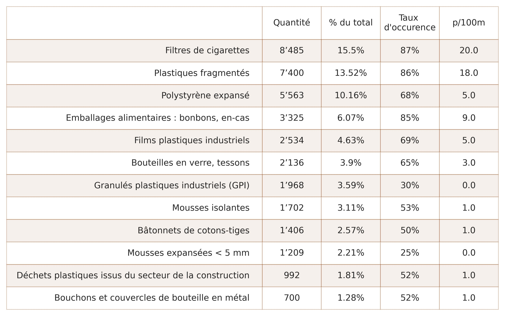
Figure 2: Total des relevés de tous les lacs et cours d’eau : objets les plus courants identifiés de mars 2020 à mai 2021. Le taux d’occurrence (celui-ci est dénommé comme « taux d’échec » dans le présent rapport) est le rapport entre le nombre de fois où un objet a été identifié au moins une fois et le nombre total de relevés réalisés. La quantité indique le nombre total d’objets identifiés. La valeur médiane correspond au nombre d’éléments collectés par transect de 100 m (p/100m). À titre d’exemple, 8485 filtres de cigarettes ont au total été identifiés dans 87 % des relevés, ce qui représente 15 % de l’ensemble des objets collectés et correspond à une valeur médiane de 20 filtres de cigarettes par 100 m de rivage
Des quantités importantes de granulés plastiques industriels (GPI) et de mousses expansées < 5 mm ont été retrouvées, mais ceci seulement sur certains sites spécifiques. Ces déchets sont présents dans moins de 50 % des relevés, ce qui se traduit par une valeur médiane égale à zéro. Si les GPI et les mousses expansées entrent tous les deux dans la catégorie des microplastiques, leur utilisation, leur origine et leur taux d’occurrence varient en fonction de la région étudiée. Les GPI sont des matières premières utilisées dans les processus de moulage par injection tandis que les billes de mousse expansée sont le résultat de la fragmentation du polystyrène. Pour de plus amples informations sur les zones de relevé, les quantités et les taux d’occurrence des objets individuels, voir Lacs et rivières - english .
{kind=link}
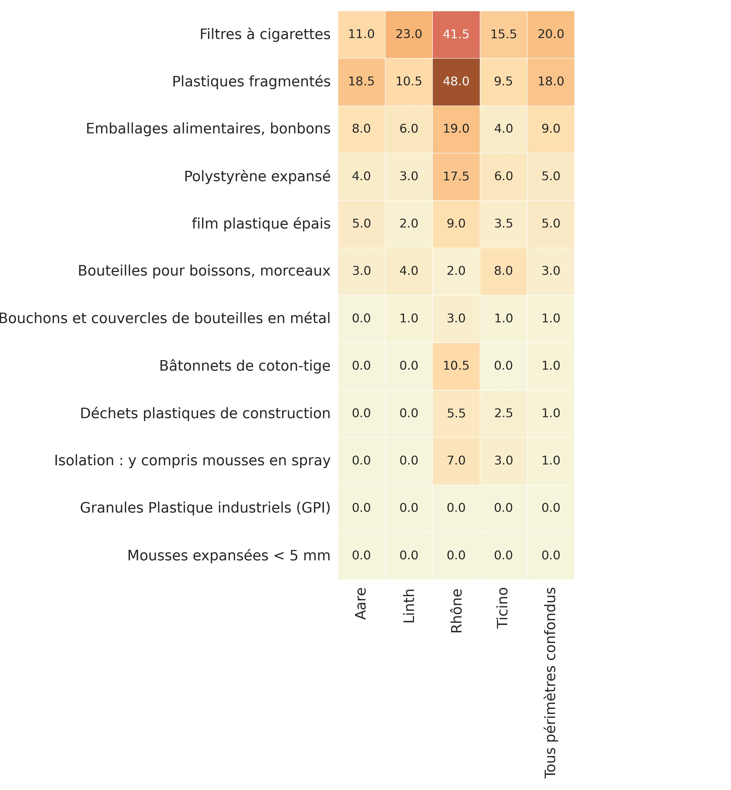
Figure 3: Ensemble des lacs et cours d’eau par périmètre d’étude : valeur médiane globale des objets les plus courants identifiés. Les taux varient en fonction du périmètre d’étude dans lequel se situe la zone de relevé. Les plastiques fragmentés présentaient par exemple la valeur médiane la plus élevée dans les périmètres de l’Aar (18,5p/100m) et du Rhône (48p/100m).
Tendances depuis 2017-2018¶
Une comparaison entre les résultats de l’IQAASL et des données relatives aux lacs et aux cours d’eau de nature similaire recueillies entre 2017 et 2018 (SLR) ne fait pas ressortir de différences statistiques, même si des variations sont à noter en ce qui concerne les quantités d’objets collectés. Si moins de filtres de cigarettes et de bouchons de bouteille ont de manière générale été identifiés sur la période 2020-2021, aucun changement n’était à signaler sur de nombreux sites, si ce n’est une légère augmentation des plastiques fragmentés et des mousses expansées, voir Plus ou moins de déchets depuis 2017 pour plus détails.
{kind=link}
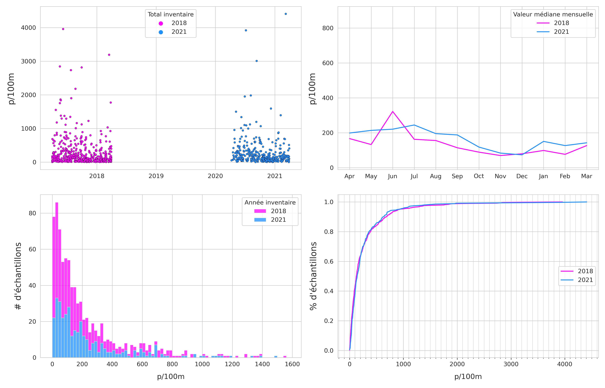
Figure 4: Comparaison des résultats des inventaires SLR (2018) et IQAASL (2021). En haut à gauche : totaux des inventaires par date. En haut à droite : totaux des valeurs médianes mensuelles. En bas à gauche : nombre total d’échantillons par rapport au nombre de relevés. En bas à droite : répartition empirique cumulative des résultats totaux des inventaires.
Les Alpes et le Jura¶
Parmi les 20 inventaires réalisés dans le périmètre des Alpes, 17 remplissaient des critères de longueur et de largeur supérieures à 10 m. De l’ordre de 110p/100m, la valeur médiane était inférieure à celle de tous les autres périmètres d’étude (189p/100m). Les objets liés à la consommation d’aliments, de boissons ou de tabac constituaient un pourcentage plus faible du total et présentaient un taux d’occurrence (p/100m) inférieur par rapport aux résultats relevés sur les rivages. Ces différences pourraient en partie être dues au taux d’urbanisation réduit qui caractérise le périmètre d’étude des Alpes par rapport à tous les autres périmètres d’étude et à la tendance qu’ont les matériaux de s’écouler vers l’aval. Pour de plus amples détails sur la méthodologie et les résultats, voir Les Alpes et le Jura - english.
Communication des résultats¶
Pour communiquer sur les degrés de pollution, il apparaît pertinent de convertir les résultats en une simple mesure du nombre moyen d’éléments collectés par transect de 100 m, étant donné que ce chiffre est généralement plus élevé et rarement égal à zéro. Cependant, la moyenne peut s’avérer deux fois supérieure à la valeur médiane lorsque des valeurs extrêmes interviennent, si bien qu’il en résulte une confusion quant à la différence existant entre les résultats observés et les valeurs rapportées. Communiquer la plage de valeurs probables, ou la probabilité de trouver un objet, est plus informatif et plus facilement reproductible lorsque des protocoles similaires sont appliqués. Les quantités de granulés plastiques industriels retrouvées sur les bords du lac Léman permettent par exemple l’interprétation suivante.
Au total, 1387 granulés plastiques industriels (GPI) ont été collectés, soit 5 % de tous les objets identifiés sur le lac Léman. Le nombre d’éléments par 100 m varie de 0 à 1033 selon les régions. En ce qui concerne le lac de manière générale, la probabilité de trouver au moins un granulé lors d’un inventaire est d’environ 40 %, quel que soit le lieu concerné. Dans certains endroits, comme sur les plages de Genève (probabilité de 60 %) ou de Préverenges (probabilité de 80 %), les GPI constituent des déchets caractéristiques et il est courant de relever des quantités comprises entre 3p/100m et 56p/100m.
Conclusions¶
À l’échelle nationale, les résultats de l’IQAASL sont stables par rapport aux relevés qui avaient été effectués en 2017 dans le cadre de l’étude SLR. Une diminution globale de la quantité de déchets issus de la consommation d’aliments, de boissons et de tabac est néanmoins à noter. Les objets liés aux infrastructures ainsi que les plastiques fragmentés et mousses expansées n’ont pas diminué et sont même en forte augmentation à certains endroits. En limitant les grands rassemblements en plein air, les restrictions liées à la pandémie sont susceptibles d’avoir influé positivement sur la baisse des déchets issus de la consommation d’aliments, de boissons et de tabac. Les objets liés aux infrastructures ont enregistré les plus fortes augmentations dans les cantons du Valais et de Vaud ainsi qu’à Brienz, c’est-à-dire sur des sites proches des apports fluviaux du Rhône et de l’Aar.
L’utilisation des sols observée autour d’une zone de relevé exerce un effet mesurable quant au dépôt de certains objets. Plus il existe de bâtiments et d’infrastructures à proximité, plus on retrouve de déchets issus de la consommation de tabac et de produits alimentaires. Cette corrélation n’est pas observée pour les objets comme les plastiques fragmentés et les films plastiques industriels. Ces derniers sont en effet retrouvés à des taux à peu près égaux quelle que soit l’utilisation des sols, si ce n’est que leur concentration augmente près des exutoires des cours d’eau et des canaux.
Actuellement, trois des quatre périmètres d’étude de l’IQAASL font l’objet d’une surveillance active assurée en aval de la Suisse par des organismes de recherche et des institutions étatiques qui s’appuient sur des méthodes similaires à celles décrites dans le présent rapport. En Suisse, des associations régionales collaborent par ailleurs activement avec des organisations partenaires au sein de l’UE afin de standardiser rapports et protocoles.
L’IQAASL est un projet scientifique citoyen qui recourt exclusivement à des outils open source et partage les données recueillies via une licence publique GNU, permettant ainsi une collaboration avec les parties prenantes. Depuis que le mandat a pris fin le 31 décembre 2021, Hammerdirt assure la maintenance du code et de la base de données, qui est hébergée sur Github et librement accessible au public.
Les associations qui ont participé au projet IQAASL recherchent activement des moyens d’intégrer le processus de collecte de données et/ou les résultats des inventaires dans leur propre mode de fonctionnement. Cependant, de nombreuses associations régionales font face à une pénurie de spécialistes des données, ce qui est susceptible de retarder ce processus d’intégration et de freiner l’innovation au niveau où elle s’avère le plus nécessaire.
Recommandations¶
Suivi et rapports¶
Le partage de données et la production de rapports gagneraient immédiatement en efficacité si un format de rapport standard était défini. Les institutions régionales pourraient ainsi communiquer plus facilement leurs priorités aux autres parties prenantes, ce qui faciliterait les stratégies de suivi et aiderait à définir des objectifs de réduction. Pour ce faire, les mesures suivantes pourraient être mises en place :
Développement d’un réseau d’associations chargées de l’échantillonnage et de la communication des résultats.
Création d’un format de rapport standardisé permettant de faciliter les échanges entre les communes, cantons, régions et districts et d’améliorer la coordination des stratégies de réduction à l’échelon régional et local.
Planification de la prochaine période d’échantillonnage et définition de l’intervalle optimal entre deux inventaires.
En sus, il serait pertinent d’associer le milieu universitaire aux processus de planification, échantillonnage et analyse des résultats. Ce projet a bénéficié jusqu’ici de la collaboration de professeurs des EPFL, de l’UNIGE, du PSI et de la FHNW. Des partenaires universitaires apporteraient une contribution idéale pour continuer à développer des méthodes analytiques. Le Citizen Science Center (EPF) et le Citizen Cyberlab (UNIGE) disposent en particulier de l’expérience et des infrastructures nécessaires pour concilier projets citoyens de suivi scientifique et efforts de recherche. Il en résulterait un plan de surveillance très adaptatif et très efficace.
Élimination et réduction¶
Les stratégies visant à éliminer ou à réduire les déchets sauvages doivent d’abord tenir compte de la source.
Objets associés à l’utilisation des sols
Les résultats indiquent qu’il existe une corrélation entre le nombre de bâtiments et la quantité de déchets liés à la consommation d’aliments, de boissons et de tabac. Il semblerait donc logique que les stratégies de réduction soient tout d’abord déployées dans les zones où l’on observe une concentration élevée d’infrastructures à proximité des rivages. Les résultats recueillis dans le périmètre d’étude du Rhône suggèrent que des campagnes locales de sensibilisation pourraient exercer un effet positif, cf. figure 1.9 Lacs et rivières_- english . Si éliminer tous les objets liés à la consommation d’aliments, de boissons et de tabac couramment ciblés lors des campagnes de sensibilisation permet de réduire considérablement les quantités totales de déchets, 64 % des matériaux subsisteront encore.
Autres stratégies de réduction courantes :
Mise à disposition d’un nombre adéquat de poubelles résistantes aux animaux et aux intempéries
Hausse du rythme d’enlèvement des ordures et de balayage
Réduction des plastiques à usage unique
De nombreux pays ont commencé à restreindre la production des articles susvisés. La vente des assiettes, couverts, pailles, bâtonnets de ballon et cotons-tiges en plastique à usage unique est ainsi interdite au sein des États membres de l’UE depuis le 3 juillet 2021. En France, des filets de rétention ont été utilisés avec succès afin de filtrer les déchets transportés par les réseaux d’eaux pluviales avant qu’ils ne parviennent dans les lacs et les cours d’eau, mais cette approche nécessite des investissements supplémentaires en matière d’infrastructures, d’équipements et de main-d’œuvre.
Objets non associés à l’utilisation des sols
Les objets dont la présence n’est pas en corrélation avec l’utilisation des sols nécessitent que des actions concertées soient mises en place au moins au niveau du lac ou du cours d’eau et dans tous les lieux situés en amont des zones de relevé prévues. Les objets les plus courants sont :
les plastiques fragmentés,
les mousses expansées,
les déchets plastiques issus du secteur de la construction,
les granulés plastiques industriels,
les cotons-tiges et
les films plastiques industriels.
Ils représentent 40 % de tous les matériaux identifiés. Beaucoup ont des applications industrielles ou hygiéniques qui ne sont généralement pas associées aux activités de plage. Le développement de campagnes de sensibilisation visant à prévenir en interne les pertes de matériaux dans des secteurs spécifiques pourrait induire une réduction des objets tels que les granulés plastiques industriels utilisés pour le moulage par injection. Certains objets tels que les cotons-tiges en plastique et autres matières plastiques éliminées dans les toilettes pénètrent dans les lacs et les cours d’eau par l’intermédiaire des stations d’épuration.
Les stratégies de réduction pourraient inclure :
la modernisation des stations d’épuration afin de réduire les pertes de déchets,
des campagnes de sensibilisation ciblées sur des objets ou des produits spécifiques et
des campagnes de sensibilisation à l’intention de secteurs industriels spécifiques.
Les stratégies d’élimination ou de réduction nécessitent une action coordonnée au niveau régional qui englobe les communautés situées en amont des zones de relevé. Réduire la dépendance aux plastiques à usage unique, aux plastiques expansés, aux plastiques de construction et aux films plastiques et industriels serait susceptible de réduire considérablement les volumes qui s’accumulent dans l’environnement. Le faible coût et la nature jetable de ces matériaux ont entraîné leur prolifération et induit une dépendance sans cesse croissante dans tous les secteurs. Leur légèreté et leur dégradabilité caractéristiques facilitent leur fragmentation et leur dispersion dans les milieux naturels, en particulier lors d’une exposition extérieure prolongée. La pollution induite par les matières plastiques constitue un problème mondial si bien que de plus en plus de pays réduisent leur dépendance à l’égard des plastiques à usage unique et des plastiques expansés tels que le polystyrène.
Executive Summary¶
| Italiano | Français | Deutsch |
Identification, quantification and analysis of anthropogenic Swiss litter (IQAASL) is a project commissioned by the Swiss Federal Office for the Environment to collect data concerning visible pollutants along Swiss lakes and rivers. All discarded materials were collected and identified using litter survey techniques. The project was expanded to include 20 locations in the Alps and Jura, in total there were 406 samples from 163 locations in 95 municipalities.
This report is a summary and analysis of the litter surveys conducted and the methods employed in Switzerland from March 2020 through August 2021. TThis sampling phase overlaps with the Swiss Litter Report (SLR)[Bla18] survey period, which ran from April 2017 to March 2018. The SLR was the first project on a national level to use the standard protocol described in the Guide to monitoring beach litter [Han13] or any other comparable method. This overlap allows the results of the present study to be compared with those of the SLR.
{kind=link}
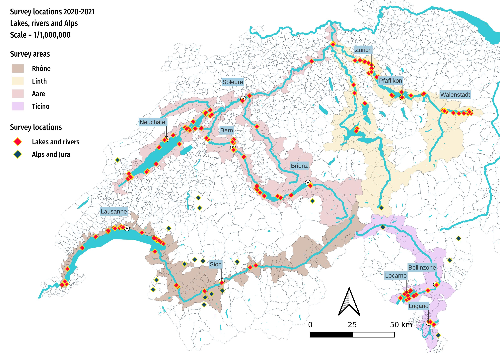
Figure 1: Map of survey locations March 2020 - August 2021. The locations in red are surveys on rivers or lakes and the purple are the locations in the Alps and Jura.
Lakes and rivers¶
The lakes and rivers were sampled from 2020-03 through 2021-05, a total of 54,744 objects were removed and classified over the course of 386 surveys. The survey locations were divided into survey areas for regional analysis and defined by the Aare, Rhône, Ticino and Linth/Limmat rivers. Surveys were conducted at 143 different locations, representing 77 municipalities. The total linear distance surveyed was 20 km with a surface area of 9 hectares and a total municipal population of 1.7 million.
Most surveys were along lake shorelines (331 samples) as lakes offer more consistent and safe year-round access with respect to rivers. Additionally, lakes are large areas of reduced flow that receive input from multiple rivers, streams and drainage systems providing ideal locations to assess the variety of objects in and around the water bodies.
In total 316 samples came from seven principal lakes in 3 major river basins. Twenty locations were selected to sample monthly for a twelve-month period with the exception of Lago Maggiore, which was sampled every three months. Surveys were also conducted on Lago di Lugano, Lac des Quatre cantons, Brienzersee and Zugersee. In addition, there were 55 surveys on 16 rivers.
Lake locations sampled monthly:
Aare survey area
Thunersee: Spiez, Unterseen
Bielersee: Biel/Bienne, Vinelz
Neuenburgersee: Neuchâtel, Cheyres-Châbles, Yverdon-les-Bains
Linth/Limmat survey area
Zürichsee: Zürich, Küsnacht (ZH), Rapperswil-Jona, Richterswil
Walensee: Walenstadt, Weesen
Rhône survey area
Lac Léman: Vevey, Saint-Gingolph, Genève, Préverenges, La Tour-de-Peilz
Ticino survey area
Lago Maggiore: Ascona, Gambarogno (tri-monthly)
Median survey total¶
The results are in units of pieces of litter per 100 meters (p/100m). The median survey result of all data was approximately 189 p/100m. The maximum recorded value was 6,617 p/100m (Rhône survey area) and the minimum recorded was 2p/100m (Aare survey area). The Rhône survey area had the highest median survey total of 442p/100m, this can in part be explained by the high number of urban survey locations with respect to the other survey areas and the deposition of fragmented plastics and foamed plastics at the Rhône River out flow in the upper lake region.
A reference value was calculated excluding the results from samples that were less than 10m and objects less than 2.5cm. This method, described in EU Marine Beach Litter Baselines [HG19] was used to calculate the reference and threshold values for all European beaches in 2015 and 2016 resulting in a median value of 131 p/100m. The results from the European baseline value lie outside the 95% confidence interval (CI) of 147 - 213p/100m established using the data from IQAASL.
Surveys in Switzerland were on average, smaller scale than in marine environments and in locations that would be considered urban under most circumstances. To date monitoring of lakes and rivers upstream of coastal regions has not generalized on the European continent. However, there is a concerted effort by a group of associations in Switzerland and France to establish a common monitoring and data exchange protocol for the Rhône basin. Additionally, the Wageningen University & Research has begun analyzing data collected in the Meusse - Rhine delta using protocols like those in IQAASL [vE].
The most common objects¶
The most common objects are defined as those objects identified in at least 50% of all surveys and/or are among the ten most abundant by quantity. As a group the most common objects represent 68% of all objects identified in the sampling period. Of the most common items 27% are food, drink and tobacco related and 24% are infrastructure and agriculture related.
Objects related to food, drink and tobacco are identified at higher rates at survey locations with a greater percentage of land attributed to buildings or fixed infrastructure, the inverse is true of the locations with a higher percentage of land attributed to woods or agriculture. However, infrastructure material and fragmented plastics, are found at similar rates throughout all survey areas indifferent of land use surrounding the survey locations.
{kind=link}
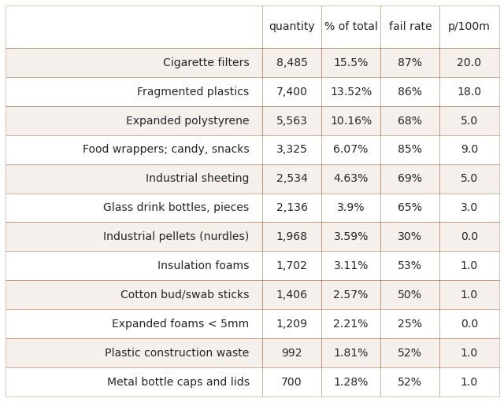
Figure 2: Survey totals all lakes and rivers: the most common objects identified from March 2020 - May 2021. The fail rate is the ratio of the number of times an object was identified at least once with respect to the total number of surveys. The quantity is the total number of an identified object collected and the median pieces of litter per 100 meters (p/100m). For example a total of 8,485 cigarette filters were identified in 87% of the surveys, representing 15 percent of the total items collected and had a median value of 20 cigarette filters per 100m of shoreline.
Industrial pellets and expanded foams < 5mm both occurred in significant quantities but identified in less than 50% of the surveys (median of 0), indicating high counts at specific locations. While both are micro plastics, their use, origin and rate of occurrence are different depending on the survey area region. Industrial pellets are raw materials used in injection molding processes whereas foamed plastic beads are the result of fragmentation of expanded polystyrene. For more information on location, quantities and rate of individual object occurrence see Lakes and rivers.
{kind=link}
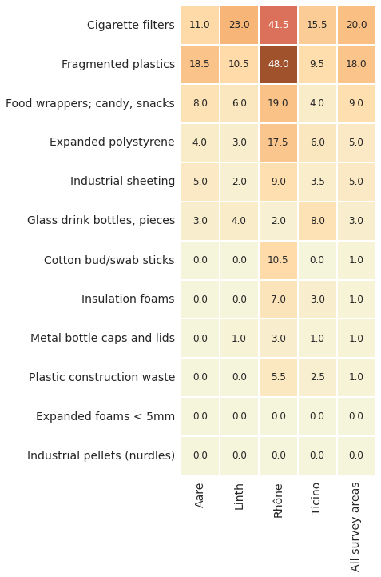
Figure 3: All lakes and rivers by survey area: The median survey total of the most common objects identified; rates vary depending on the survey area region. For example, fragmented plastics had the greatest median value in the Aare (18.5p/100m) and Rhône (48p/100m) survey areas.
Trends from 2017-2018¶
Similar lake and river survey data collected in 2017-2018 (SLR) showed no statistical difference when compared to IQAASL results. However, there were variances in object quantities. In the 2020-2021 survey period fewer cigarettes and bottle tops were identified in general, but for many locations there was no change and there was likely an increase in fragmented plastics and foams, see More and less trash since 2017 for the details.
{kind=link}
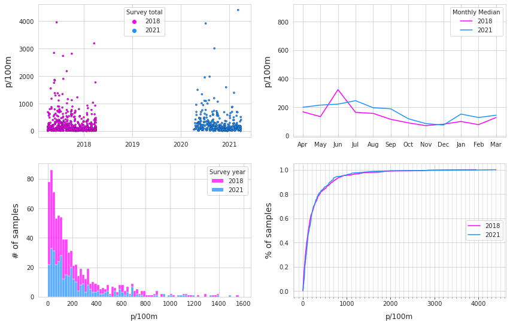
Figure 4: Comparison of survey results between SLR (2018) and IQAASL (2021). Top Left: survey totals by date. Top right: median monthly survey total. Bottom Left: number of samples with respect to the survey total. Bottom right: empirical cumulative distribution of survey totals.
The Alps and the Jura¶
Of the twenty surveys in the Alps survey area 17 met the length and width criteria of greater than 10m. The median survey value was 110 p/100m, less than the median value of all the other survey areas (189 p/100m). Objects related to consumption such as food and drink or tobacco were a smaller percent of the total and had a lower p/100m rate compared to the results from shoreline locations. This difference could be in part due to the low levels of urbanization that characterizes the Alps survey area with respect to all other survey areas and the tendency of material to flow downstream. For Alps survey methodology and results see The Alps and the Jura.
Communicating results¶
For communicating pollution quantities, converting results into a simple metric of average pieces per 100m is tempting as the average is generally larger than the median and rarely 0. However, the average may be twice the median when extreme values are considered causing confusion regarding the difference between observed and reported results. Communicating the range of likely values or the likelihood of finding an object is more informative and repeatable when following similar protocols. For example, when interpretating the quantities of industrial pellets identified on Lac Léman:
There were 1’387 plastic production pellets (GPI) or 5% of all objects identified on Lac Léman. The number of pellets per 100m ranges from 0 -1,033 depending on the region. For the lake in general there is approximately a 40% chance of finding at least one pellet at a survey, anywhere. In some locations, like Genève (60% chance) or Préverenges (80% chance), production pellets are regular features on these beaches and amounts between 3p/100m and 56p/100m are common.
Conclusions¶
At the national level, the IQAASL results are stable compared to the surveys that were carried out in 2017 as part of the SLR study. However, there was a general decrease in the quantity of food, drink and tobacco objects. Infrastructure objects and fragmented plastics and foams did not decline and some locations may have experienced sharp increases. Pandemic restrictions limiting large outdoor gatherings may have had a beneficial effect on the reduction of food, drink and tobacco items. The greatest increases in infrastructure related objects were in Valais, Vaud and Brienz, which are locations near the Rhône and Aare rivers discharge points.
The land use around a survey location has a measurable effect on the deposition of certain objects. The more buildings and fixed infrastructure there are the more tobacco and food products are found. Objects like fragmented plastics and industrial sheeting do not have the same association and are identified at approximately equal rates indifferent of the land use with increases near river/canal discharge points.
Count methods are preferred for assessing litter composition and density in marine environments although, a methodology has not been standardized for freshwater systems. Currently three of the four survey areas in the IQAASL are actively monitored by research and governmental agencies downstream of Switzerland using similar methods presented in this report. Additionally, regional associations in Switzerland are actively pursuing a standardization of reporting and protocols with partner organizations in the EU.
The IQAASL is a citizen-science project that only uses open-source tools and shares data on GNU public license, enabling collaboration with stakeholders. At the end of the mandate, December 31, 2021, Hammerdirt will assume the responsibility of maintaining the code and data repository which is hosted publicly on Github.
The associations that participated in the IQAASL are actively seeking ways to incorporate the data collection process and/or the results into their own business model. However, there is a shortage of data scientists within many regional associations which may lengthen the process of integration and stifle the rate of innovation at the level where it is needed most.
Recommendations¶
Monitoring and reporting¶
Efficiencies in data exchange and reporting would be realized immediately by defining a standard reporting format. This in turn would make it easier for regional administrations to communicate priorities to other stakeholders. Which would facilitate monitoring strategies and help define reduction targets. The following measures could be put in place to achieve this:
Develop a network of associations that are responsible for sampling and reporting of the results.
Create a standard report format to facilitate communications between municipal, cantonal and regional/district administrations and improve coordination of regional and local reduction strategies.
Establish the next sampling period or the interval of sampling.
Formally include academia in the planning, sampling and analysis. This project was influenced with collaborative university professors from ETH, UNIGE, EPFL, PSI and FHNW. University partners would be ideal to continue developing analytical methods. The Citizen Science Center (ETH) and Citizen Cyberlab (UNIGE) have the experience and infrastructure to connect citizen science monitoring projects to research efforts. Thus, creating a very adaptive and efficient monitoring plan.
Elimination and reduction¶
Strategies for eliminating or reducing trash in the water should first consider the source.
Objects associated with land use features
The results indicate a positive association between the number of buildings and the amount of food, drink and tobacco items. This suggests that reduction strategies for these objects should begin in areas that have high concentrations of infrastructure in proximity to the shoreline. The results from the Rhône survey area suggests that local awareness campaigns may have a positive effect see Figure 1.9 Lakes and rivers. While eliminating all food, drink and tobacco related objects commonly targeted in litter awareness initiatives would significantly reduce total quantities, 64% of the material would remain.
Other common reduction strategies include:
Adequate supply of weather and animal resistant trash receptacles
Increased trash removal and sweeping schedule
Single use plastic reductions
Many countries have begun restricting targeted items. For example, single-use plastic plates, cutlery, straws, balloon sticks and cotton buds cannot be placed on the markets of the EU Member States, effective 3 July 2021. Retaining nets to filter litter in stormwater systems before it enters lake and rivers has been used in France with success but requires investment in infrastructure, equipment and labor.
Objects not associated with land use
Objects that do not have a positive association with land use require a coordinated action at least at the level of the lake or river, and all locations upstream from intended survey locations. Of the most common objects these include:
Fragmented plastics
Fragmented foams
Construction plastics
Industrial pellets
Cotton swabs
Industrial sheeting
These objects are 40% of all identified material. Many have industrial and personal hygiene applications, typically not associated with beach activities. Expanding awareness campaigns targeting internal material loss prevention from specific sectors may reduce objects such as industrial pellets used for plastic injection molding. Some objects such as plastic cotton swabs and other toilet flushed plastics enter lakes and rivers via water treatment facilities.
Reduction strategies may include:
Upgrading wastewater treatment facilities to reduce material loss
Awareness campaigns for specific objects or products
Awareness campaigns for specific industries
Elimination or reduction strategies requires coordinated regional action to include the communities upstream from survey locations.
Reducing reliance on single use plastics, foamed plastics, construction plastics and industrial sheeting and films would likely greatly reduce the quantities escaping into the natural environment. The low cost and disposable nature of these materials have resulted in an ever-increasing abundance and reliance in all sectors. The lightweight and degradable attributes of these materials facilitate fragmentation and absconding into the natural systems especially with prolonged outdoor exposure. Plastic pollutants are a global problem and increasingly nations are reducing reliance on single use plastics and foamed plastics such as polystyrene.
Acronyms¶
(ABS) Acrylonitrile Butadiene Styrene
(agg) Agriculture
(BCa) Bias-corrected and accelerated confidence intervals
(BVs) Baseline Values
(CG) Contributed Group
(CI) Confidence intervals
(DG) Distributed Group
(ECDF) Empirical Cumulative Distribution Function
(EPFL) Swiss Federal Institute of Technology Lausanne
(EPS) Expanded Polystyrene Foam
(EPR) Extended Producer Responsibility
(ETH) Swiss Federal Institute of Technology Zürich
(EU) European Union
(EVs) Extreme Values
(EVT) Extreme Value Threshold
(FHNW) University of Applied Sciences and Arts Northwestern Switzerland
(FTIR) Fourier Transform Infrared
(GNU) General Public License
(GPI) Plastic production pellet
(GPS) Global Positioning System
(HDPE2) High-Density Polyethylene
(IOC)Intergovernmental Oceanographic Commission
(IQAASL) Identification, Quantification and Analysis of Swiss Litter
(JRC) Joint Research Centre
(LDPE4)Low-density Polyethylene
(LPE)Loi sur la Protection de l’Environnement
(LWS) Landwirtshaft
(MLE) Maximum Likelihood Estimation
(MCBP) Montreux Clean Beach Project
(MOM) Method of Moments
(MSFD) Marine Strategy Framework Directive
(OLED) Ordinance on the Limitation and Disposal of Waste
(OSPAR) Oslo/Paris convention (for the Protection of the Marine Environment of the North-East Atlantic)
(PSI) Paul Scherrer Institute
(pcs) pieces
(p/100m) Pieces per 100 meters
(PVC3) Polyvinyl Chloride
(PET) Polyethylene Terephthalate
(PP5) Polypropylene
(PPL) Precious Plastic Léman
(PS6) Polystyrene
(QGIS) Quantum Geographic Information System
(SLR) Swiss Litter Report
(STOPPP) Stop Plastic Pollution Switzerland
(UNEP) United Nations Environment Program
(UNIGE) University of Geneva
(VD) Vaud
(WWF) World Wildlife Fund
(XPS) Extruded Polystyrene Foam